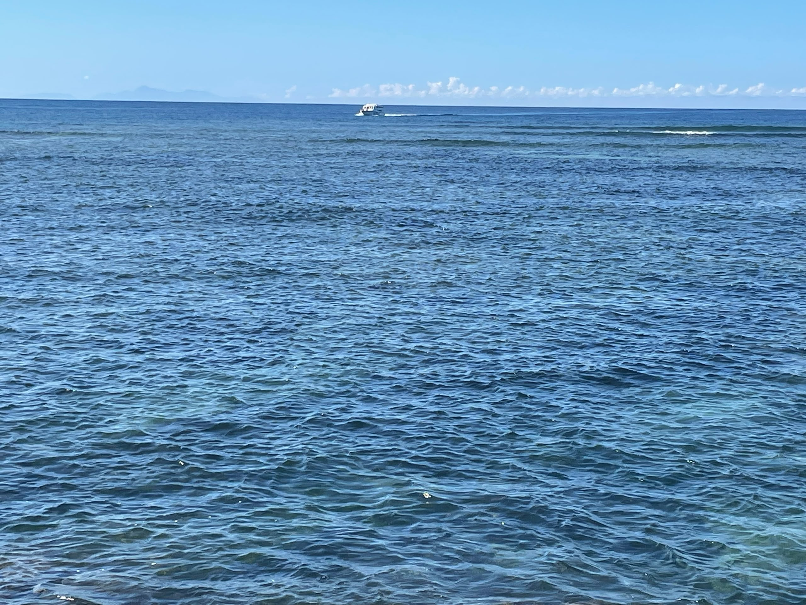

MoheliGoTRAVERSÉES MARITIMES
AVIS AUX VOYAGEURS
TA PLACE,EN UN MESSAGE.
MVola est hors service dans tout le pays.
Les vedettes partent, et on prend ta place à la main.
ÉCRIS-NOUS AU +269 479 43 28
TRAVERSÉES MARITIMES DES COMORESmoheligo.com